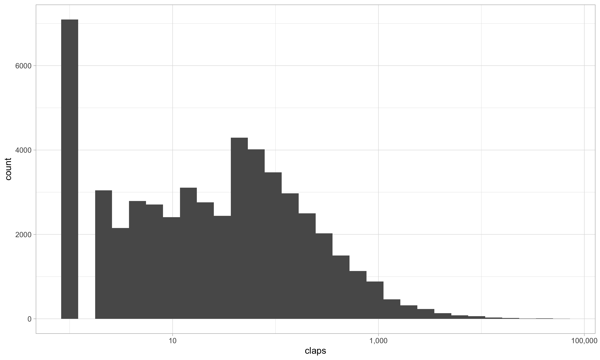
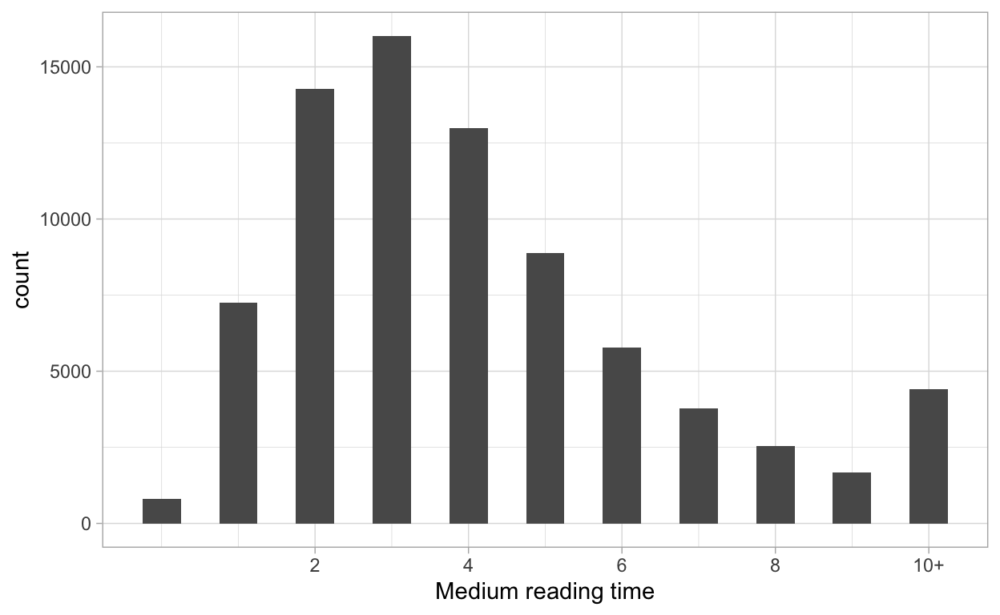
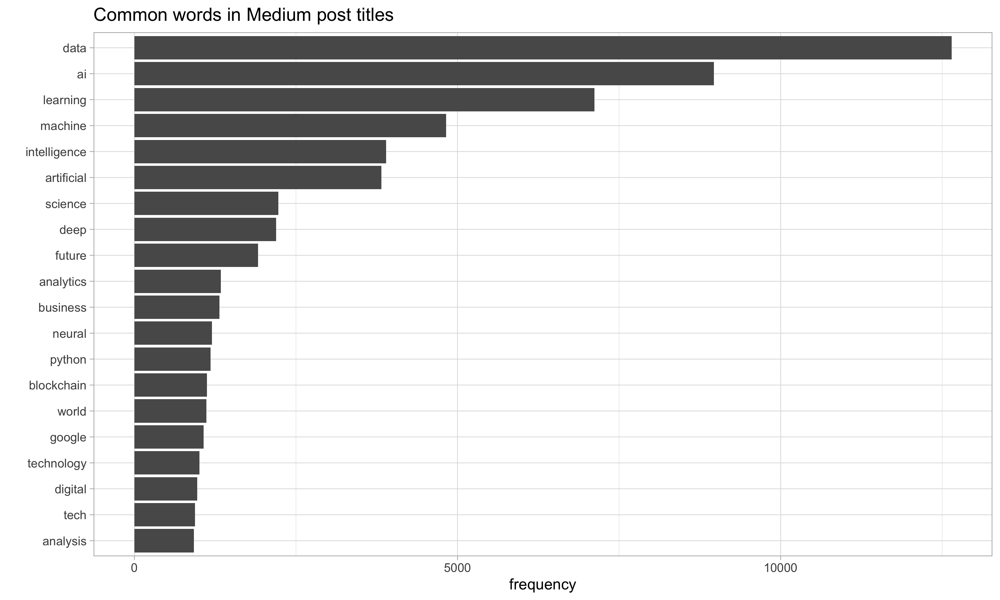
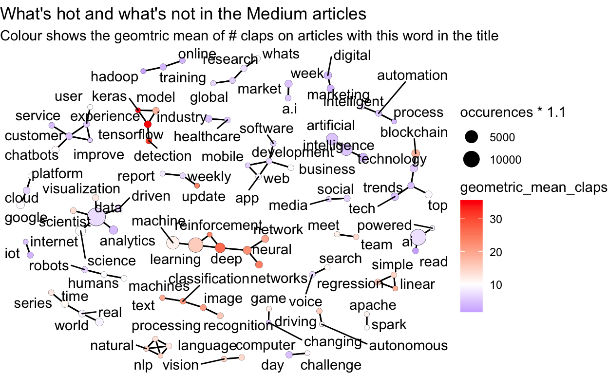

TidyTuesday Data. 2018-12-04
library(tidyverse)
library(tidytext)
theme_set(theme_light())
tt <- tidytuesdayR::tt_load("2018-12-04")
Downloading file 1 of 1: `medium_datasci.csv`
medium_datasci <- tt$medium_datasci %>%
select(-x1)
medium_datasci %>%
count(publication, sort = TRUE)
# A tibble: 7,298 x 2
publication n
<chr> <int>
1 <NA> 44072
2 Towards Data Science 3135
3 Hacker Noon 1178
4 Becoming Human: Artificial Intelligence Magazine 671
5 Chatbots Life 450
6 Data Driven Investor 351
7 Chatbots Magazine 350
8 SyncedReview 320
9 Planeta Chatbot todo sobre los Chatbots y la Inteligencia Ar… 294
10 DEEPAERODRONES 273
# … with 7,288 more rows
medium_datasci %>%
count(author, sort = TRUE)
# A tibble: 33,305 x 2
author n
<chr> <int>
1 Yves Mulkers 487
2 Synced 328
3 <NA> 286
4 DEEP AERO DRONES 279
5 AI Hawk 245
6 Peter Marshall 209
7 Ilexa Yardley 162
8 Alibaba Cloud 160
9 Corsair's Publishing 156
10 Jae Duk Seo 150
# … with 33,295 more rows
medium_datasci %>%
summarise(across(starts_with('tag'), sum))
# A tibble: 1 x 8
tag_ai tag_artificial_… tag_big_data tag_data tag_data_science
<dbl> <dbl> <dbl> <dbl> <dbl>
1 13763 29580 8686 9420 15424
# … with 3 more variables: tag_data_visualization <dbl>,
# tag_deep_learning <dbl>, tag_machine_learning <dbl>
medium_pivot_longer <- medium_datasci %>%
pivot_longer(
starts_with('tag'),
names_to = "tag"
) %>%
mutate(tag = str_remove(tag, "tag_")) %>%
filter(value == 1)
medium_pivot_longer %>%
count(tag, sort = TRUE)
# A tibble: 8 x 2
tag n
<chr> <int>
1 artificial_intelligence 29580
2 machine_learning 25175
3 data_science 15424
4 ai 13763
5 data 9420
6 big_data 8686
7 deep_learning 6612
8 data_visualization 4334
medium_pivot_longer %>%
group_by(tag) %>%
summarise(median_claps = median(claps)) %>%
arrange(desc(median_claps))
# A tibble: 8 x 2
tag median_claps
<chr> <dbl>
1 deep_learning 25
2 machine_learning 12
3 data_science 11
4 artificial_intelligence 5
5 data_visualization 5
6 ai 4
7 data 3
8 big_data 1
medium_datasci %>%
ggplot(aes(claps)) +
geom_histogram() +
scale_x_log10(label = scales::comma_format())
medium_datasci %>%
mutate(reading_time = pmin(10, reading_time)) %>%
ggplot(aes(reading_time)) +
geom_histogram(binwidth = .5) +
scale_x_continuous(breaks = seq(2, 10, 2),
labels = c(seq(2, 8, 2), "10+")) +
labs(x = "Medium reading time")
medium_pivot_longer %>%
group_by(tag) %>%
summarise(reading_time = mean(reading_time)) %>%
arrange(desc(reading_time))
# A tibble: 8 x 2
tag reading_time
<chr> <dbl>
1 deep_learning 5.08
2 machine_learning 4.76
3 data_science 4.69
4 artificial_intelligence 4.36
5 data_visualization 4.26
6 ai 4.14
7 data 4.05
8 big_data 3.97
medium_words <- medium_datasci %>%
filter(!is.na(title)) %>%
transmute(post_id = row_number(),
title, subtitle, year, reading_time, claps) %>%
unnest_tokens(word, title) %>%
anti_join(stop_words, by = "word") %>%
filter(!(word %in% c("de", "en", "la", "para")),
str_detect(word, '[a-z]'))
medium_words %>%
count(word, sort = TRUE) %>%
mutate(word = fct_reorder(word, n)) %>%
head(20) %>%
ggplot(aes(n, word)) +
geom_col() +
labs(title = "Common words in Medium post titles",
x = "frequency",
y = "")
medium_words_filtered <- medium_words %>%
add_count(word) %>%
filter(n >= 250)
tag_claps <- medium_words_filtered %>%
group_by(word) %>%
summarise(median_claps = median(claps),
geometric_mean_claps = exp(mean(log(claps + 1))) - 1 ,
occurences = n()) %>%
arrange(desc(median_claps))
library(widyr)
library(ggraph)
library(igraph)
top_word_cors <- medium_words_filtered %>%
select(post_id, word) %>%
pairwise_cor(word, post_id, sort = TRUE) %>%
head(150)
vertices <- tag_claps %>%
filter(word %in% top_word_cors$item1 |
word %in% top_word_cors$item2)
set.seed(2018)
top_word_cors %>%
graph_from_data_frame(vertices = vertices) %>%
ggraph(layout = "fr") +
geom_edge_link() +
geom_node_point(aes(size = occurences * 1.1)) +
geom_node_point(aes(size = occurences, colour = geometric_mean_claps)) +
geom_node_text(aes(label = name), repel = TRUE) +
scale_colour_gradient2(low = "blue",
high = "red",
midpoint = 10) +
theme_void() +
labs(title = "What's hot and what's not in the Medium articles",
subtitle = "Colour shows the geomtric mean of # claps on articles with this word in the title")